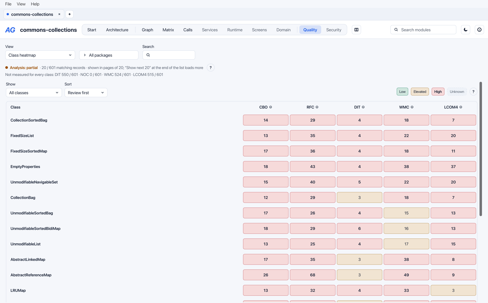

Mit dem Code beginnen.
Öffne ein Projekt ohne Konfigurationsdatei. Erkunde Imports, Dateien und unterstützte Service-Verbindungen.
Evidenzbasierte Architekturanalyse, die sagt, was sie misst und was nicht. Erkunde Abhängigkeiten am Desktop, prüfe Regeln in CI und gib deinem Coding-Agent dieselben Belege.
Projekt erkundenFehlende Evidenz ist keine Null. Nicht-kommerzielles Open Source · Lokale Analyse · Keine Telemetrie
Öffne ein Projekt ohne Konfigurationsdatei. Erkunde Imports, Dateien und unterstützte Service-Verbindungen.
Untersuche Quellstellen und Zyklusgruppen. Deklarierte Abhängigkeiten bleiben von beobachteten Laufzeitaufrufen getrennt.
Ergänze Architekturregeln, prüfe sie in CI oder lass deinen Coding-Agent die Analyse über MCP abfragen.
World View, Graph, Matrix, Aufrufe und arc42 zeigen verschiedene Perspektiven desselben Projekts.
Echte App-Aufnahmen aus Commons Collections mit englischer Oberfläche. Ohne Ton und simulierte Klicks. Bei reduzierter Bewegung startet das Video erst auf Wunsch.
CBO, RFC, DIT, NOC, WMC, LCOM4, Cognitive Complexity, Halstead und Maintainability hängen vom Sprachadapter ab. Unbekannte Werte bleiben unbekannt. Sprachen und Messgrenzen
Teilen sich zwei Services heimlich eine Tabelle?
Lies Deployment-Evidenz aus Compose, Kubernetes und Terraform. Aktiviere Helm- oder Kustomize-Rendering bei Bedarf. Folge Datenbankverbindungen bis zu unterstützten ORM- und SQL-Tabellendeklarationen.
archguard services . --format jsonGemeinsamer Server, gemeinsame Datenbank und gemeinsame Tabelle sind verschiedene Befunde. Unbekannte Tabellennamen bleiben unbekannt; Konfiguration beweist keine Laufzeitnutzung. Kein Cluster-Zugriff, keine Secrets und kein Terraform-State.
Befehle und Grenzen
Microsoft eShop · Quell- und Konfigurationsevidenz. Echte Desktop-Aufnahme; Herkunft und Aufnahmezeit siehe Bildnachweise.
Führt dieser Pull Request einen neuen Architekturverstoß ein?
Prüfe Schichtregeln und Grenzwerte mit archguard check. Übernimm bestehende Zyklen bewusst in eine Baseline und prüfe Änderungen samt KPI-Deltas im Pull-Request-Kommentar. Das Repository enthält eine GitHub Action.
archguard check . --baseline
archguard review . --base main --format pr-commentEine Baseline verhindert Rückschritte, bescheinigt aber keine Fehlerfreiheit. Regeln bestimmen das Gate; Evidenzlücken und akzeptierte Befunde bleiben sichtbar.
Befehle und Grenzen
Commons Collections · Desktop-Metriken ergänzen Review-Befunde. Echte Desktop-Aufnahme; Herkunft und Aufnahmezeit siehe Bildnachweise.
Welche Quellzeilen erklären diese Abhängigkeit?
Verbinde den lokalen stdio-MCP-Server mit deinem Coding-Agent. Frage gezielt nach Änderungskontext, untersuche einen Zyklus und folge seinen Quellbelegen. Desktop, CLI und Agent nutzen dieselbe Analyse.
archguard mcp --root /path/to/projectLeseabfragen und Simulationen sind von Imports, Baselines und anderen schreibenden Aktionen getrennt. Prüfe vorgeschlagene Änderungen und führe danach die Projekttests aus.
Befehle und Grenzen
Commons Collections · Quellstellen hinter Aufrufen. Echte Desktop-Aufnahme; Herkunft und Aufnahmezeit siehe Bildnachweise.
Würde das Entfernen dieser Abhängigkeit den Zyklus auflösen?
Simuliere cut-, move- und merge-Operationen am Modulgraphen. Vergleiche Zyklusgruppen, bevor du Quellcode änderst. Nutze echte Knotennamen aus der Analyse oder exportierte Operationen aus dem Viewer.
archguard simulate . --ops operations.json --format jsonEine virtuelle Graphänderung ist noch kein implementiertes Refactoring. Quellkompatibilität, Verhalten und Tests müssen weiter geprüft werden. Der Befehl liest eine aus dem Viewer exportierte Operationsdatei.
Befehle und Grenzen
Commons Collections · Abhängigkeitsgraph vor einer virtuellen Änderung. Echte Desktop-Aufnahme; Herkunft und Aufnahmezeit siehe Bildnachweise.
Passt die Dokumentation noch zu diesem Stand?
Erzeuge alle arc42-Kapitel auf Deutsch oder Englisch, wähle Diagramme und prüfe auf Abweichungen. Exportiere Word für den Confluence-Import, AsciiDoc, ein Structurizr-/C4-Modell oder einen Markdown-Bericht mit Mermaid.
archguard doc . --arc42 --stdout
archguard doc . --arc42 --format docx
archguard graph . --format structurizrGenerierte Evidenz ergänzt menschliche Entscheidungen. Word-Exporte enthalten Diagramme als Mermaid- oder PlantUML-Quelltext, nicht als gerenderte Bilder. Ein C4-Export bildet den unterstützten Quell- und Deployment-Umfang ab.
Befehle und Grenzen
Microsoft eShop · arc42-Kontextabgrenzung. Echte Desktop-Aufnahme; Herkunft und Aufnahmezeit siehe Bildnachweise.
Martin-A/I-Zonen, Propagation Cost, SDP-Verstöße, Tangledness, Health, Layer Drift und Leaky Encapsulation. Jede Metrik mit ihrem Geltungsbereich lesen.
archguard review . --format jsonGit-Churn × Kopplung, Co-Change ohne Imports, CODEOWNERS und ein Entscheidungsregister mit expliziten ADR-Verweisen.
archguard hotspots .
archguard co-change .
archguard ownership .OpenAPI-Import, GraphQL aus Quellen und Breaking-Change-Baselines. OTel-Traces für beobachtete Aufrufe, N+1-Kandidaten und langsame Statements importieren; Sampling-Profile sind separate Evidenz.
archguard contracts .
archguard runtime .Coverage-, SARIF-, JUnit-, Mutations- und CPD-Imports; eingebauter Duplikat-Scanner. Offline-CycloneDX-Inventar und explizite Lizenzregeln; Advisories benötigen Scanner-Evidenz.
archguard sbom . --format cyclonedx
archguard evaluate .ISO-25010-Ziele ordnen Evidenz ein; sie beweisen keine Zielerfüllung. Recall und Precision erfordern eine menschliche Expertenbewertung.
Pakete, Zyklen und Quellbelege. Reproduzierbare Anleitung (EN).
Statisch hergeleitete Event-Beziehungen in .NET Aspire. Anleitung (EN).
Architektur auf einer großen Java-Codebasis, mit festgehaltenem Analyseumfang. Anleitung (EN).
Konfigurierte Beziehungen und gRPC-Quellbelege unterscheiden. Anleitung (EN).
TypeScript/JavaScript und C/C++ sind jeweils eine Sprachgruppe. Imports funktionieren ohne zusätzliche Compiler; weitere Analyse benötigt je nach Sprache passende Werkzeuge.
Installiere ArchGuard und öffne dein Projekt. Die Konfiguration kann später dazukommen.
Installation und Einstiegcurl -fsSL https://raw.githubusercontent.com/@@REPOSITORY@@/main/scripts/install/install.sh | sh
cargo install --path crates/archguard-cli --locked
archguard check /pfad/zum/projekt
archguard mcp --root /pfad/zum/projektDesktop unter macOS: ~/Applications/ArchGuard.app öffnen, dann Datei → Projekt öffnen. Linux/Windows: archguard-desktop starten. Alle Installationswege (EN).
Architekturwerkzeuge vergleichen · Artikel und Praxisbeispiele · Dokumentation